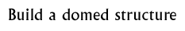

Follow-up 1  |
|
Objectives: For the children to understand how a domed building is constructed. For children to further understand the structure of stupas. To provide a link with D&T projects featuring structures.
Materials: Photographs and pictures of a variety of domed buildings: e.g., Duomo in Florence, a geodesic dome (made of triangles or polygons fitted together) or minarets, etc. Structural model building materials such as Art Straws, K-Nex, etc.
Class set-up: Whole class introduction and small groups, can be expanded to make a much larger activity.
Vocabulary: Stupa, dome, construction.
Activity: Discuss the photos and pictures of the stupa first with the children. Ask them how they think it was built or constructed; ask them to discuss possible building materials and methods of construction. Try to get them to bear in mind the age of the stupa and how the tools and machinery available to the builders would have been very limited. Compare the stupa with modern and more complex domed structures and discuss how they are different and how the construction would have been different.
The children can attempt to build their own stupa/domed building by planning a method, picking construction materials and making their stupa. They could use a variety of building materials including papier mâché or D&T materials. Extensions:
Background information:
Ashoka and the Mauryan EmpireThe Buddha
© The British Museum |